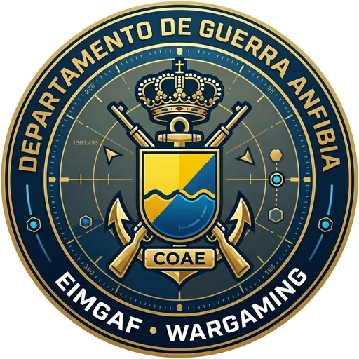
Manual de instrucciones · Confrontación de líneas de acción (Paso 4 OTAN)
Departamento de Guerra Anfibia · EIMGAF
La herramienta guía al Estado Mayor por el Paso 4 del planeamiento (análisis y confrontación de COA): enfrenta cada línea de acción propia (BLUE COA) con las del adversario obtenidas en el IPOE (RED COA / ECOA), adjudica cada turno con datos empíricos (equivalentes de fuerza, tablas de bajas BCTP, ratios mínimos de planeamiento, Monte Carlo) y genera los productos del paso.
| Control | Para qué sirve |
|---|---|
| Selector de operación | Cambia entre operaciones guardadas (TRYZUB, MAR AZUL y las suyas). |
| Rol | Adapta la vista a quien la usa: célula roja, célula azul, árbitro o función de EM (ver página 7). |
| ES / EN | Idioma de la interfaz. |
| Exportar · Importar | Copia de la operación en JSON (también admite copias de wargaming_nato v2). |
| Manual · Asistente | Este manual en PDF · panel de comprobaciones doctrinales. |
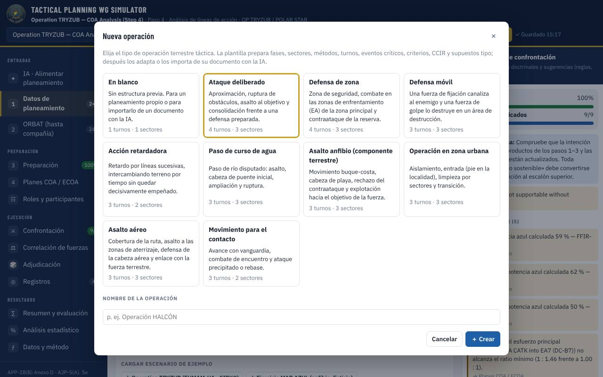
＋ Nueva operación: diez plantillas tácticas terrestres.
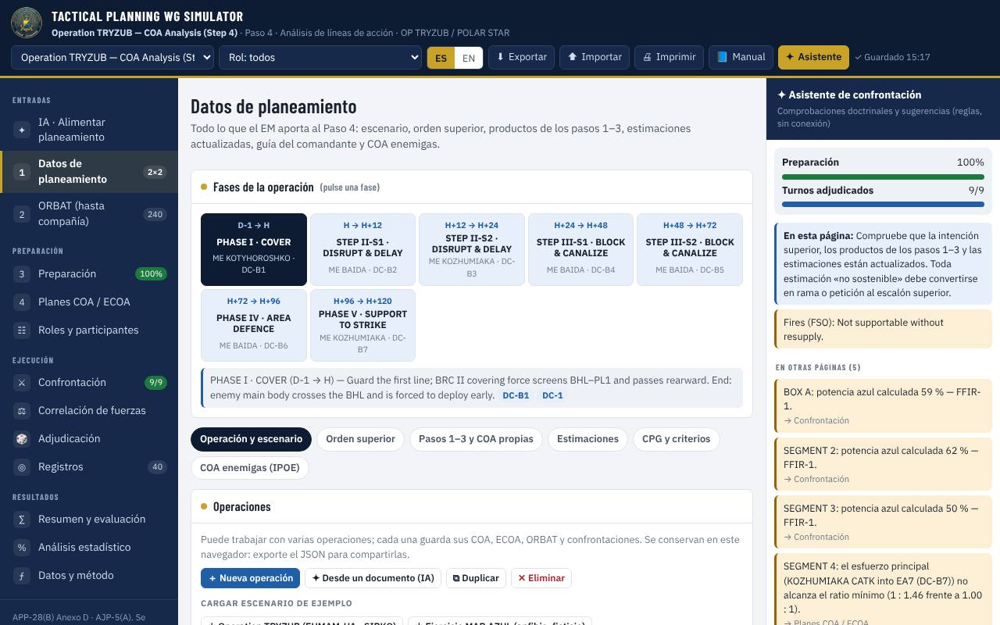
1 Datos de planeamiento, por pestañas.
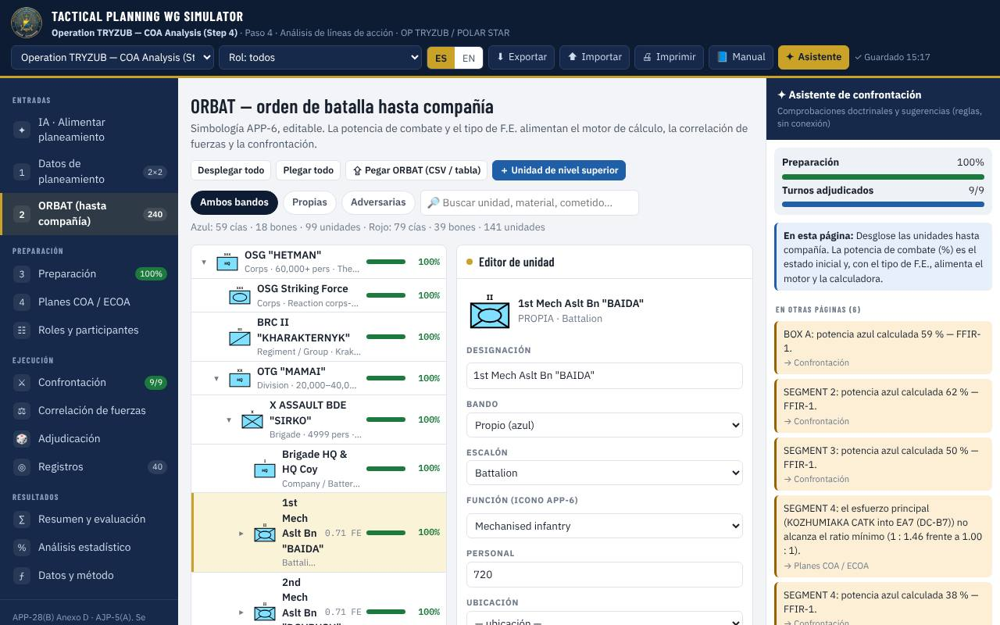
Árbol hasta compañía con simbología APP-6. Para cada unidad indique potencia (%) y tipo de F.E. (Force Ratio Calculator Matrix): es lo que usa el motor. ⇪ Pegar ORBAT importa una tabla de Excel/Word/CSV.
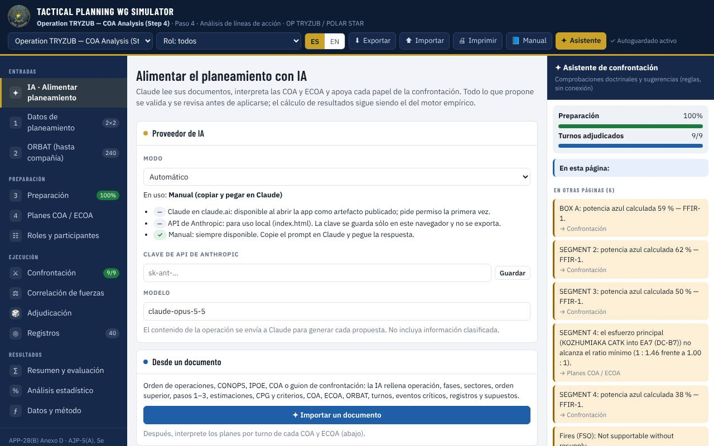
| Función | Qué hace |
|---|---|
| Importar un documento | Lee una orden, CONOPS, IPOE o guion (.docx, .pdf, .txt o texto pegado) y rellena todos los campos: fases, sectores, COA, ECOA, ORBAT, turnos, registros y supuestos. |
| Interpretar COA / ECOA | Convierte el enunciado en el plan por turnos (enfrentamientos, unidades, tareas, sectores, HPT y modificadores). «Interpretar todas en cadena» hace primero las ECOA y luego las COA. |
| Redactar | Propone una COA o ECOA nueva y el borrador de conclusiones (FACDS, fortalezas, debilidades). |
| Proponer con IA (en cada turno) | Reacción roja, contrarreacción azul, justificación del árbitro, ramas y aportación de cada función de EM. |
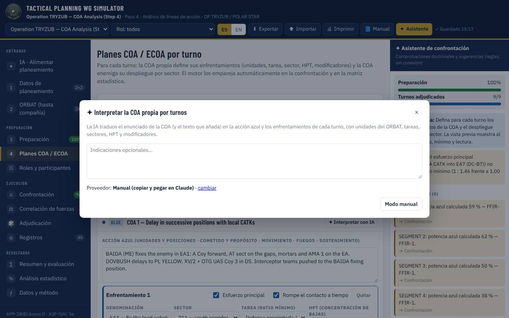
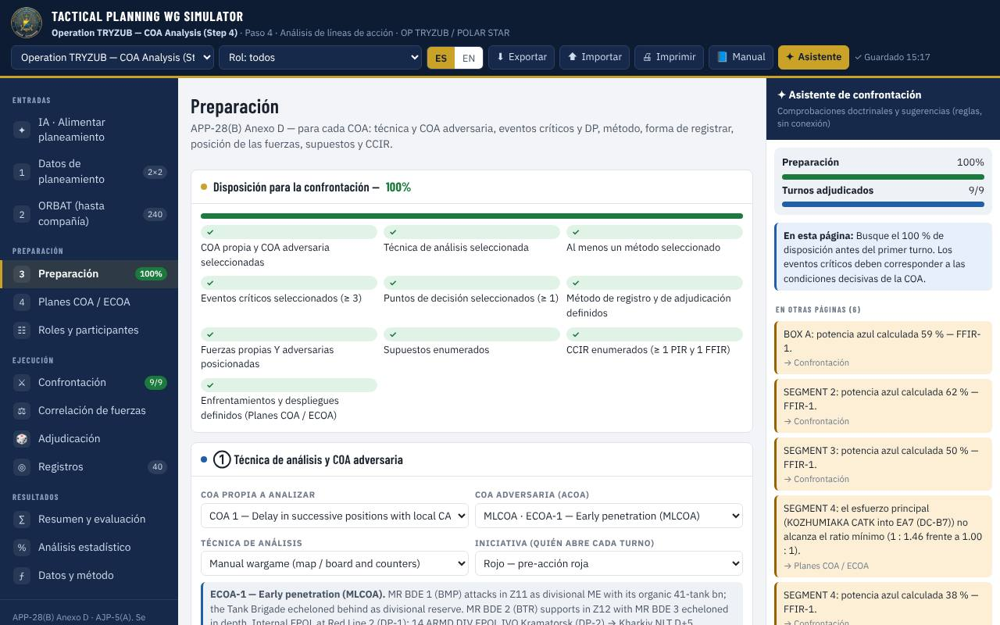
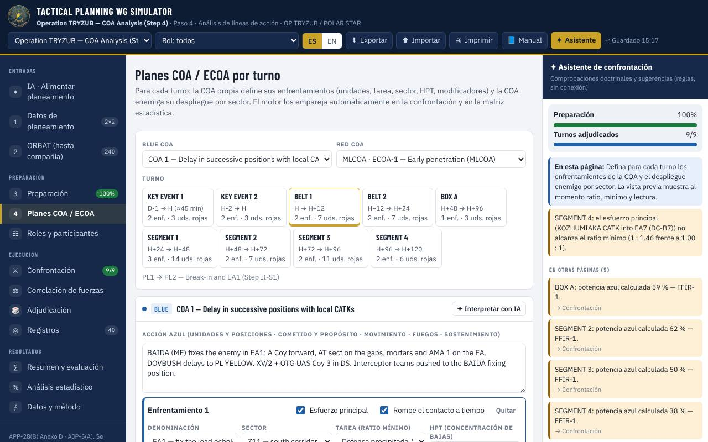
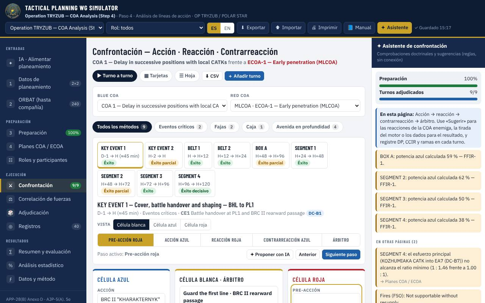
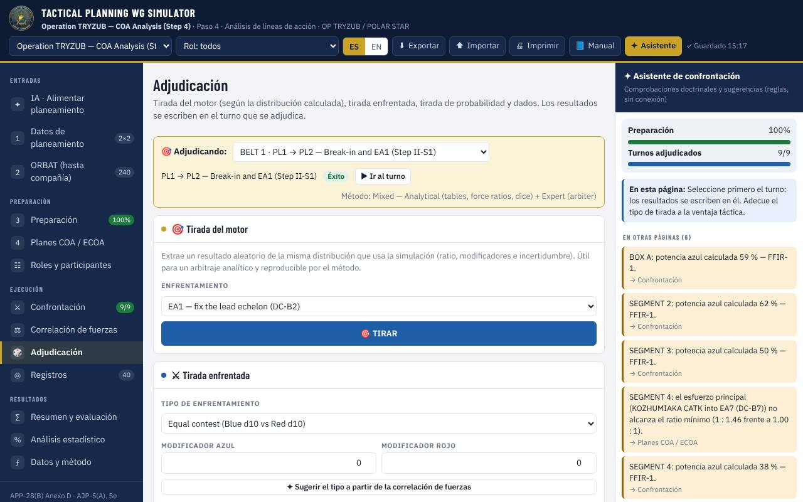
Adjudicación: tirada del motor, tirada enfrentada, d10 y dados.
Vistas: «Turno a turno», «Tarjetas» (todos los turnos) y «Hoja» (tabla, exportable a CSV). Correlación de fuerzas: calculadora ST 100-3 que puede cargar un enfrentamiento. Registros: NAI, TAI, HPT, HVT, DP y CCIR con referencias cruzadas.
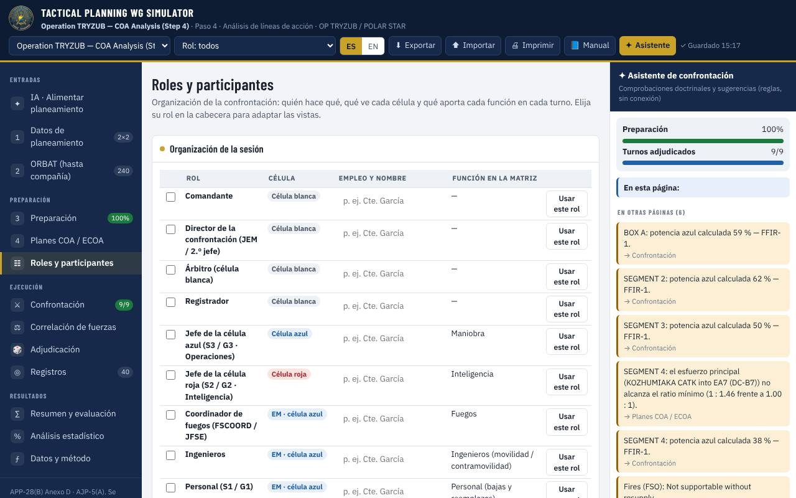
| Rol | Qué ve | Qué hace |
|---|---|---|
| Comandante · Director · Árbitro · Registrador | Las tres células | Guía, dirige la sesión, adjudica y registra. |
| Célula azul (S3) | Azul y árbitro | Acción y contrarreacción, empleo de la reserva. |
| Célula roja (S2) | Roja y árbitro | Juega al adversario: pre-acción y reacción; PIR, NAI, HVT. |
| Funciones de EM (fuegos, ingenieros, S1, S4, S6, S9, información, protección, LEGAD) | Azul + su panel | Aportación por turno a la matriz de sincronización. |
Elija el rol en la cabecera. En Roles y participantes asigne nombres, marque presentes y revise la lista de comprobación de cada rol.
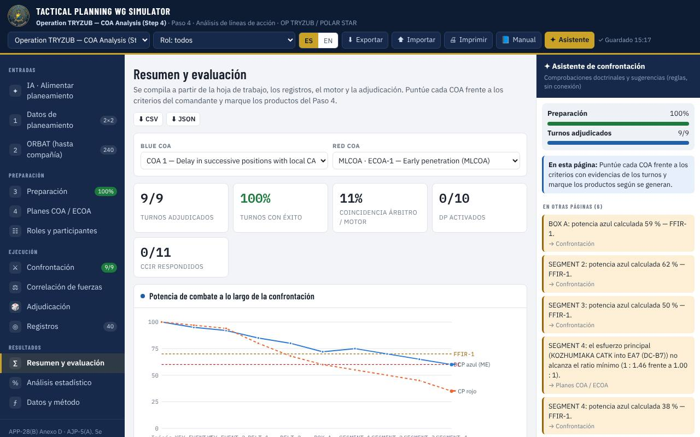
Resumen y evaluación: indicadores, potencia por turno, observaciones automáticas, registro de la confrontación, matriz de sincronización, puntuación frente a los criterios del comandante, FACDS, conclusiones y lista de productos (COA refinada, DSO, supuestos y CCIR actualizados).
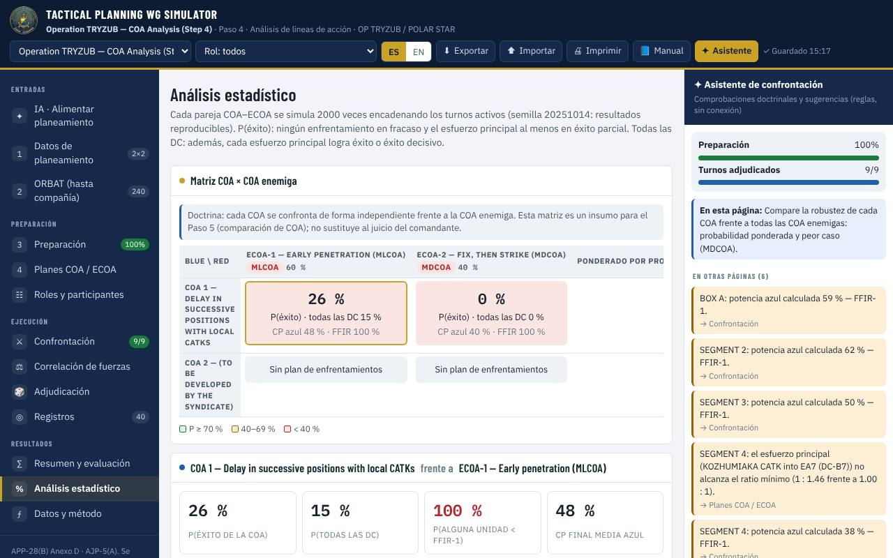
Análisis estadístico: matriz COA × ECOA con P(éxito), P(todas las DC), potencia final y riesgo FFIR, ponderada por la probabilidad de cada ECOA y con el peor caso (MDCOA). Datos y método permite calibrar todos los parámetros del motor.
| Término | Significado | Término | Significado |
|---|---|---|---|
| COA / ECOA | Línea de acción propia / enemiga | MLCOA / MDCOA | Más probable / más peligrosa |
| DP | Punto de decisión | CCIR (PIR, FFIR, EEFI) | Necesidades críticas de información |
| NAI / TAI | Área de interés / de objetivos | HPT / HVT | Objetivo de alta rentabilidad / alto valor |
| F.E. | Equivalente de fuerza | FFIR-1 | Umbral de potencia propia |
| FACDS | Factible, aceptable, completa, distinguible, adecuada | DC | Condición decisiva |
TACTICAL PLANNING WG SIMULATOR · Departamento de Guerra Anfibia · EIMGAF · Uso didáctico.